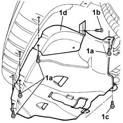

7055B54 under-engine guard - r r
- Path
- Procedures > 70 FITTINGS > 7055 MOULDING AND PROTECTION > 7055B exterior protections > 7055B54 under-engine guard - r r
- Kind
- repair procedure (removal / refitting; the operation number is the code)
- Applies to
- all engines; all production periods
- Interactive page
- https://sloeber94.github.io/elrnDB-fDbl/en/#/2585221
Applies to: all engines; all production periods
 Removing
Removing
 Refitting
RefittingPlace the car on a ramp.
1. Unscrew the front (1a), left and right side (1b) and rear (1c) bolts and remove the guard under the engine (1d).

Applies to: all engines; all production periods
Refitting
RemovingFit the guard under the engine and secure it with the bolts.
Remove the vehicle from the ramp.
Topics that link to this page (215)
- 0010T12 engine oil and filter replace
- 0010T20 coolant change
- 1004B10 POWER UNIT WITH MANUAL GEARBOX - R.R
- 1004B12 power unit with manual gearbox - r+r for versions with a/c
- 1008a42 GEARBOX SIDE POWER UNIT RIGID SUPPORT - R.R.
- 1008a46 cam shaft left rigid mount - r r
- 1008a46 TIMING SIDE POWER UNIT RIGID SUPPORT - R.R.
- 1008b10 power unit front mount (timing side) flexible block - replace
- 1008b30 gearbox side mount flexible block - replace
- 1008b30 GEARBOX SIDE SUPPORT FLEXIBLE MOUNTING(S) - REPLACE
- 1008C10 power unit upper reaction link r r
- 1008C30 power unit lower reaction link r r
- 1008C34 BRACKET ON GEARBOX FOR LOWER REACTION ROD - R.R.
- 1016B10 single cylinder head extension - change gasket
- 1016B20 lh cylinder head extension - replace gasket
- 1016B24 rh cylinder head extension - replace gasket
- 1016C10 cylinder head - r + r and replace gasket
- 1016C11 single cylinder head-r r gasket for versions with air conditioner
- 1020A20 crank case oil sump - r + r clean seals for sealant application
- 1020A30 engine oil drain plug - replace
- 1020B10 cover of timing system with chain drive - r + r replace oil seal and gasket
- 1020D12 front crank shaft oil seal cover - r + r and replace seals
- 1020D14 front crank shaft oil seal cover - r + r and replace seals for versions with oil pump on crank shaft, timing side
- 1020D16 front crankshaft oil seal cover - r+r and replace gaskets for versions with airconditioner
- 1020D18 front crank shaft cover oil seal - replace
- 1020D20 front crankshaft cover oil seal - replace for versions with air conditioner
- 1020D26 flywheel side oil seal cover - r+r
- 1020D38 flywheel side oil seal - replace
- 1024B10 engine flywheel - r + r for versions with manual gearbox
- 1028H10 connecting rod and piston set - r r
- 1028H20 piston with connecting rod - r r
- 1028H21 piston with connecting rod - r r
- 1032B10 toothed timing belt - r + r for timing adjustment or replacement
- 1032B14 TOOTHED TIMING BELT - R + R FOR TIMING ADJUSTMENT OR REPLACEMENT VERSIONS WITH AIR CONDITIONING
- 1032B46 toothed drive pulley - r + r
- 1032B47 toothed drive pulley - r r for versions with air conditioner
- 1032B52 toothed driven pulley (one) - r + r
- 1032B53 driven toothed pulley (one) - r r for versions with air conditioner
- 1032B60 bolt pulley - r r
- 1032A12 CHAIN AND GEARS for timing system - R.R. for timing or Replacement.
- 1032C18 mobile timing system tensioner - r + r for 24 valve engines
- 1032C19 mobile timing belt tensioner - r r for versions with air conditioner
- 1032C32 fixed timing system tensioner (one) r + r
- 1032C40 Timing CHAIN TENSIONER PLATE - R.R.
- 1032C42 timing belt tensioner mount - r r
- 1032D12 timing system protective cover(s) - r + r
- 1032D34 timing system guard assemblies - r + r
- 1036B10 overhead camshaft - r r on vehicle
- 1036G10 camshaft controlling exhaust valves in top head - r + r with top head removed - includes replacement of top head
- 1036G20 camshaft controlling intake valves in top head - r + r with top head removed - includes replacement of top head if necessary
- 1036H57 hydraulic tappets all r r
- 1042B10 CNG supply PIPE from solenoid valve to pressure reduction unit - R.R.
- 1040B32 front fuel delivery line - r r
- 1040B54 fuel line from manifolds - r r
- 1048A10 air cleaner filtering element - replace
- 1048A50 air inlet pipe to turbo charger - r + r
- 1048B14 air delivery pipe between turbo charger and heat exchanger - replace
- 1048B10 RIGID SUPPLY PIPE (ONE) BETWEEN TURBOCHARGER AND HEAT EXCHANGER -R.R.
- 1048B22 air delivery sleeve from heat exchanger to intake manifold - r + r
- 1048B50 turbo charger intercooler - r + r
- 1048B20 AIR SUPLY HOSE BETWEEN HEAT EXCHANGER AND RIGID PIPE - REPLACE
- 1058A90 cng injection wiring harness - arrange
- 1056B60 single fuel manifold pipe, with injectors - r + r
- 1056B61 single fuel manifold with injectors - r+r with air conveyor/box removed
- 1060A10 injection pump - r + r
- 1060A20 injection pump - check timing and adjust
- 1060A34 injection pump toothed pulley - r + r with timing belt removed
- 1060A70 injection pump mount r r
- 1060B10 injectors - r + r
- 1060D26 rpm sensor - r+r
- 1060E40 supplementary pressure pump - r r
- 1060E50 Fuel pressure REGULATOR - R.R.
- 1060G10 flow meter - r r
- 1060G14 engine coolant temperature sensor - r r
- 1060G20 Engine RPM SENSOR - R.R.
- 1060G90 diesel injection wiring harness - r r
- 1064A11 TURBOCHARGER with CATALYTIC CONVERTER - R.R.
- 1064A19 TURBOCHARGER - EXHAUST MANIFOLD - EXHAUST PIPE CONNECTING HOSE - R.R.
- 1064A30 turbocharger bracket - r r
- 1064A50 sleeve joining turbo charger and exhaust pipe - r + r and replace seal
- 1064B42 solenoid controlling turbocharger vane position actuator r r
- 1072B10 inlet manifold - r + r and replace seal
- 1072B14 inlet manifold - r+r and replace seal with air conveyor/box removed
- 1072B50 sleeves connecting air capacity box to inlet manifold is - r+r
- 1072C10 exhaust manifold - r + r and replace seal
- 1072C16 exhaust manifold with catalytic converter - r r
- 1072C44 exhaust manifold heat shield on bulkhead - r+r
- 1076B10 exhaust pipe assembly - r + r
- 1076B18 rigid section of exhaust pipe between catalytic converter and silencer - r + r
- 1076B34 front catalytic converter attachment seal - replace
- 1076B35 catalytic converter rear gasket - r r
- 1076B50 exhaust pipe attachment to engine - r + r
- 1076B58 exhaust pipe attachment to engine seal/s - replace
- 1076B70 EXHAUST PIPE BETWEEN PRE-CATALYTIC CONVERTER AND CATALYTIC CONVERTER - R.R.
- 1080B62 catalytic converter - r + r
- 1080B40 CATALYTIC PRE-CONVERTER - R.R.
- 1080B95 rear lambda probe with catalitic converter r r
- 1080C50 pipe carrying exhaust gas to e.g.r. valve - r + r
- 1080C80 exhaust gas water heat exchanger for egr valve r r
- 1080C82 E.G.R. - VALVE HEAT EXCHANGER ASSEMBLY - Connector PIPES - R.R.
- 1080D24 engine oil vapour intake pipe - r + r
- 1080D26 idling engine oil vapour inlet line - r r
- 1080E20 active carbon filter for fuel vapours - r + r
- 1080E59 Fuel vapour PIPE from INTERMEDIATE pipe to ACTIVE CHARCOAL FILTER - R.R.
- 1084A16 oil dip stick pipe - r r
- 1084A22 engine oil filler - r r
- 1084A42 engine oil pressure warning light switch - r + r
- 1084B12 engine oil pump - r+r
- 1084B26 emgine oil intake duct - r r
- 1084B30 engine oil filter r r
- 1084B40 engine oil delivery pipe to turbocharger - r + r
- 1084B42 engine oil return pipe from turbo - r + r
- 1084C20 radiant mass for engine oil cooling - r + r
- 1088A30 ENGINE COOLING SYSTEM - draining and refilling circuit and bleeding air
- 1088B10 engine cooling tank - r + r
- 1088B20 engine cooling radiator - r + r
- 1088B24 engine cooling radiator - r r for air conditioned versions
- 1088B26 Engine cooling radiator AIR DUCT PROTECTION/ - R.R.
- 1088B32 engine cooling radiator support beam - r r
- 1088C10 water pump - r + r
- 1088C12 water pump - r+r for versions with air conditioner
- 1088C30 thermostat unit - r+r
- 1088C40 thermostat- r + r
- 1088D10 lower sleeve for coolant outlet from radiator - r + r
- 1088D14 upper sleeve for coolant inlet to radiator - r + r
- 1088D23 sleeve from thermostat to rigid pipe carrying fluid to pump - r r
- 1088D24 rigid pipe for coolant inlet to water pump - r + r
- 1088D47 oil exchange sleeve - r r
- 1088D53 RIGID supply or return PIPES for ENGINE OIL HEAT EXCHANGER - R.R.
- 1088D92 hose from engine oil water heat exchanger to rigid pipe for egr system exhaust gas water heat exchanger r r
- 1088E10 radiator cooling fan - r + r
- 1088E11 fans with single engine duct - r+r
- 1092A10 Crankshaft services PULLEY - R.R.
- 1092A12 crankshaft pulley - r+r for versions with air conditioner
- 1092B50 alternator/air conditioner compressor drive belt - adjust tension
- 1092B40 AIR CONDITIONER COMPRESSOR/ALTERNATOR DRIVE BELT - R + R
- 1092B54 alternator/water pump drive belt - adjust tension
- 1092B42 AIR CONDITIONING COMPRESSOR AND ALTERNATOR DRIVE BELT TENSIONER - R.R.
- 1092B60 alternator drive belt - r + r
- 1092B82 auxilary belt mobile tensioner (one) -r+r
- 1092C10 power steering and/or self-levelling suspension pump drive belt - r + r
- 1092C11 power steering pump drive belt - r r for versions with air conditioner
- 1092C12 power steering pump drive belt - adjust tension
- 1092C14 power steering pump/self levelling suspension pump pulley - r + r with belt removed
- 1092D10 air conditioner compressor drive belt - r + r
- 1092D14 air conditioner compressor drive belt - adjust tension
- 1092G10 single engine belt r r
- 1092G14 engine component single belt mobile tensioner - r + r
- 1092G20 engine component single belt fixed tensioner - one - r + r
- 1810A20 clutch - r + r
- 1820a24 THRUST BEARING LINKAGE - R + R
- 2110A10 manual gearbox and differential - r + r
- 2110a60 manual gearbox/engine coupling bracket - r+r
- 2110C30 gearbox rear cover - r + r.
- 2110D53 left hand flange on differential - r+r
- 2110D63 rh differential shaft oil seal - r r
- 2125C30 gear engagement cable - r r
- 2180A28 milometer control support on gearbox - r + r
- 2180A36 milometer control sensor on gearbox - r + r
- 2710A14 right hand drive shaft with joints - r+r
- 2710A31 intermediate drive shaft - r r
- 2710A32 intermediate drive shaft bearing support - r + r with intermediate drive shaft removed
- 2710A35 intermediate drive shaft mount - r r
- 2710A40 l/h or r/h drive shaft (one) - r + r
- 3330D15 BRAKE SERVO - R.R. FOR RIGHT HAND DRIVE VERSIONS AND AIR CONDITIONING - INCLUDES. SEPARATING MASTER CYLINDER
- 3330E53 RIGID PIPE from master cylinder to RIGHT front brake - R.R.
- 3340B56 RIGID PIPE from hydraulic CONTROL UNIT to RIGHT FRONT BRAKE - R.R.
- 3340B62 rear connection central pipe - r r
- 4110A14 STEERING WHEEL - Spoke alignment - Includes. checking and if necessary. adjusting. front wheel toe in
- 4110B10 steering links - r+r on vehicle - check tow-in/tow-out separately
- 4130A10 power steering box - r+r - check tow-in if necessary separately - includes bleeding
- 4130A13 POWER ASSISTED STEERING BOX - R.R. - If necessary. check wheel toe in separately - Includes. bleeding air - on right hand drive versions
- 4130B10 power steering fluid resevoir r r
- 4130B20 power steering pump r r
- 4130B21 power steering pump r r with interfering parts removed
- 4130B40 outlet pipe from pump to power steering case r r
- 4130B30 POWER STEERING PUMP BRACKET OR SUPPORT - R.R.
- 4130B41 outlet pipe from pump to power steering case r r for right hand drive versions
- 4130B32 POWER STEERING PUMP SUPPORT - R R
- 4130B46 return line to power steering reservoir (with build-in heat exchanger pipe)-r r
- 4130B42 RETURN PIPE FROM POWER STEERING BOX TO POWER STEERING FLUID RESEVIOR - R.R.
- 4130B49 return pipe from power steering case to heat exchanger pipe r r
- 4130B51 return pipe from power steering case heat exchanger pipe r r for right hand drive versions
- 4410A12 front suspension damper (one), lh or rh - for mcpherson strut system - includes dismantling/re-building of assembly at bench r r
- 4410B40 lower wishbone (with balljoint) of left or right front suspension (one) - r+r -check wheel geometry separately
- 4410C10 front suspension stabilizer bar - r+r - check wheel geometry separately
- 4410C16 front suspension stabilizer bar joint bushes - replace
- 4410D13 front suspension beam - r r
- 4450A10 front wheel geometry - check using optical equipment - includes front wheel tow-in adjustment if necessary
- 5010A16 HEATER WATER RETURN PIPE - R.R.
- 5020A10 heater box - r+r
- 5020A50 heater radiator - r+r
- 5020B80 heater system wiring bundle - r r or replace
- 5040A20 air conditioner compressor - r+r - includes fluid level check and top up if necessary
- 5040A26 compressor mount - r r
- 5040A40 air conditioner condenser - r+r
- 5040A44 air conditioner dehydrating filter/accumulator - r+r
- 5040A50 pipe from compressor to air conditioner condenser - r+r
- 5040A52 pipe from condenser to dehydrating filter - r+r
- 5040A54 pipe from dehydrating filter to expansion valve - r+r
- 5040A73 compressor inlet pipe - r r
- 5040B14 air conditioner system multi-level pressure switch - r+r
- 5040B22 air conditioning system de-mister thermostat - r+r
- 5040C10 air conditioner box - r+r
- 5040C12 air conditioner housing - r r with facia disconnected
- 5040C50 air conditioner heater radiator - r+r
- 5040C64 a/c evaporator - r+r
- 5050A10 windscreen washer fluid reservoir (in engine bay) - r+r
- 5050B20 windscreen washer electrical pump - r+r
- 5505C28 intergrated engine bay and abs system wiring - r r
- 5520B10 starter motor - r+r
- 5530A10 alternator - r+r
- 5550D22 reversing light switch - r+r
- 7210A18 R.R FRONT CROSSMEMBER
- 7210E10 R.R. FRONT BUMPER